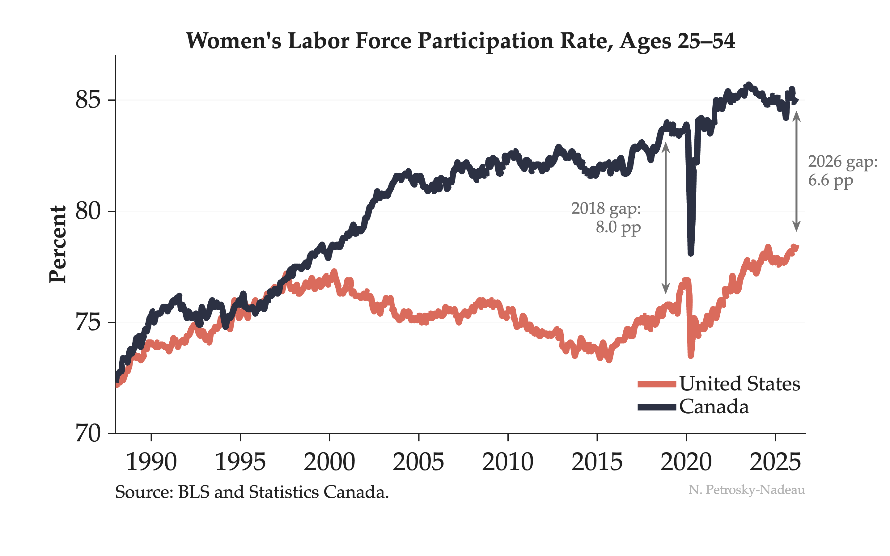

In 1988, women's labor force participation in the US and Canada was nearly identical — both around 72%.

Then the paths split. Canada kept climbing. The US peaked around 2000 and stalled for two decades. By 2018, the gap had widened to 8 percentage points. But look at the salmon line recently — US women's participation has surged to a record 78.5%, narrowing the gap to 6.6 pp.